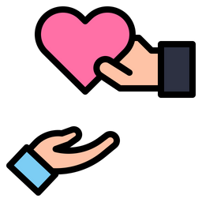

Photo credit:Urban Omnibus
The Bronx Mόvil is a project of cooperative mutual aid that has become a harm reduction organization since 2018. It is based on providing street services, fully bilingual, with a particular focus on users who consume drugs intravenously from the Latinx community. Since September, the Bronx Mόvil is now fully active 24 hours a day, 7 days a week after only operating during the weekends for the past five years.
Opioid prevention
Naloxone and fentanyl testing strips are the two key items that the Bronx Mobil buys in order to reduce the effects of opioids from the people in need. Out of the 200 packs they buy every Monday, more than half are gone by Wednesday.
Safe syringes
Around 800 to 900 new syringes and injection kits are provided on a daily basis as a harm reduction plan in 2023. By the end of last year 301,654 syringes were distributed
Adressing hunger
Multiple food banks of the Bronx give each weekend 100-120 meals to the Bronx Mobil as a way to secure hunger in those who need their health services during the week.
Volunteer participation
A total of 1,550+ volunteer participants and counting were recorded on 2022 to provide harm reduction services during the week and holidays